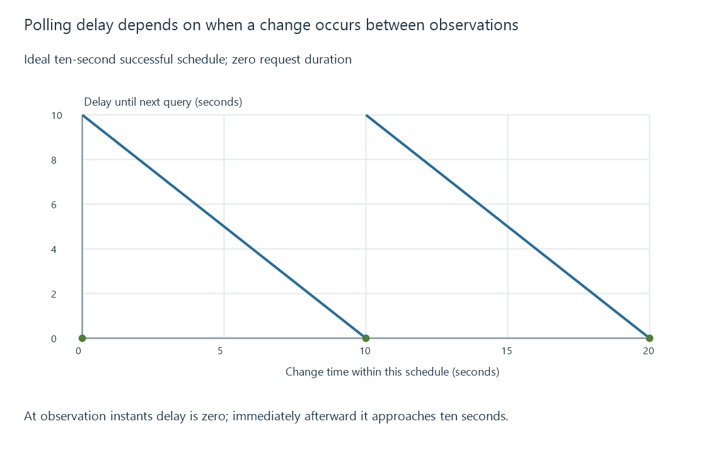

Polling for updates and observation intervals
Polling queries current state at intervals, trading observation delay and request volume while potentially missing short-lived intermediate states.
Polling repeatedly queries a source for its current state. A playback integration might ask which sessions are active, then compare the returned state with its previous successful observation.
The interval controls how quickly a change can be noticed and how often the query runs.
One interval, two costs
In an ideal ten-second schedule with instantaneous successful queries, a change just before a query is noticed almost immediately. A change just after one waits almost ten seconds.
If changes occur uniformly within that interval, the average detection delay is five seconds.
One query every 10 seconds -> 6 requests/minute
Ideal detection delay -> 0 to almost 10 seconds
Uniform-timing average -> 5 seconds

Real request duration, scheduling and failures add to those delays. The average is a model assumption, not a response-time guarantee.
A current-state sample can miss a transition
Suppose a player starts at second two and stops at second eight. Queries at seconds zero and ten can both report stopped.
| Time | Actual state | Poll observation |
|---|---|---|
| 0 | Stopped | Stopped |
| 2 | Playing | No query |
| 8 | Stopped | No query |
| 10 | Stopped | Stopped |
The observations can be accurate while the intermediate playback is absent from them. Polling current state is not a complete event history.
A failed query is also unknown state, not a successful observation of “no sessions.” Keep the last successful observation and its age separate from the latest failure.
Avoid overlapping work unintentionally
If a query takes longer than the interval, starting another every interval can create accumulating concurrent requests. A bounded polling design decides whether to wait, skip, cancel or use another supported policy.
For Emby integrations, choose observations around the state needed and the endpoint's cost. Rate limits describe shared request demand; event delivery describes a different way to learn about transitions.
See Also
- API rate limits and respectful request scheduling
- WebSockets and a continuing message connection
- Playback sessions and current player state